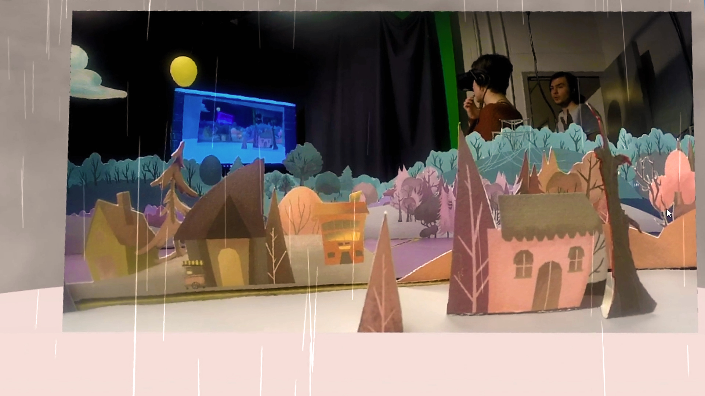

Paper Town VR
Emil Polyak, Patrick Fitzgerald, Simon Park, Connor Shipway, Hilary Smith, Julia Lineberry, Nattanun Sumpunkulpak, Monica Nguyen and Lucas Gargano
-

- 
-

Click to Experience
Requirements
| Edge | Chrome | Chromium | Firefox | Firefox Nightly | Safari | |
|---|---|---|---|---|---|---|
| Desktop (360) | ✔ | ✔ | ✔ | ✔ | ✔ | ✔ |
| Google Cardboard | ✔ | ✔ | ✔ | |||
| Oculus Rift | ✔(Windows) | ✔(Windows) | ||||
| HTC Vive | ✔(Windows) | ✔(Windows) |
Note: Viewing content in 360-degrees on your Desktop or using a mobile device with Google Cardboard does not usually require any special browser setup. For instructions on how to setup your browser to work with a VR headset like the Oculus Rift or HTC Vive click on the browser name above. The Samsung Gear VR and Google Daydream are also good choices for experiencing WebVR. If the piece works on Google Carboard it is likely to work on these as well.
Description
Paper Town VR is an interactive art installation that immerses the user in a miniature 360° physical environment that can be experienced remotely through WebVR.
The integral part of this project is a handcrafted artwork that adds a human touch to the experience. Utilizing a motorized camera as a scaled-down vantage point, the user can observe the scenery and goings-on of a tiny two-dimensional village as if it existed at a human scale. We created an even greater illusion of depth- using warmer, more saturated colors to make objects come forward and cooler, more muted colors fade them back. Inspired by the 1937 debut of the Disney Multi-Plane Camera, Paper Town VR enlists the effect of motion parallax to add spatial realism to the captured environment. This allows the viewer to use their natural perception of space to more intuitively understand the layout of the environment. Paper Town VR also opens up possibilities for a variety of hybrid and augmented realities, such as overlaying weather effects into the digital viewing space. Finally, since the video stream is live, it provides the opportunity to be used as a live set – objects or characters can be added to the set to appear to the viewer in real time.
This work was created to celebrate the 80th anniversary of Disney’s multi-plane camera, exploring the representation of the physical motion parallax effect in the VR space.
Bios
Alban Denoyel is 32-year-old French entrepreneur. He is the co-founder and CEO of Sketchfab. Prior to Sketchfab, he launched a web agency, and worked for 4 years in the 2D world of photojournalists. He graduated from ESSEC Business School (Paris, France).
Bobby Beck is the CEO and cofounder of the online animation school Animation Mentor, and online collaboration platform Artella. He is a former Pixar animator.